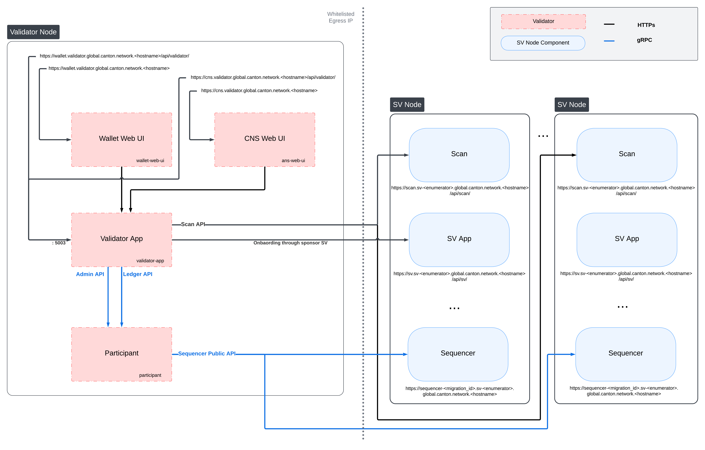

Kubernetes-Based Deployment of a Validator node
This section describes how to deploy a standalone validator node in Kubernetes using Helm charts. The Helm charts deploy a validator node along with associated wallet and CNS UIs, and connect it to a global synchronizer.
Requirements
A running Kubernetes cluster in which you have administrator access to create and manage namespaces.
A development workstation with the following:
kubectl- At least v1.26.1helm- At least v3.11.1
Your cluster needs a static egress IP. After acquiring that, provide it to your SV sponsor who will propose adding it to the IP allowlist to the other SVs.
Please download the release artifacts containing the sample Helm value files, from here: Download Bundle, and extract the bundle:
tar xzvf 0.4.0-snapshot.20250513.1.0.vc4aa6b49_splice-node.tar.gz
Warning
If you lose your keys, you lose access to your coins. While regular backups are not necessary to run your node, they are strongly recommended for recovery purposes. You should regularly back up all databases in your deployment and ensure you always have an up-to-date identity backup. Super Validators retain the information necessary to allow you to recover your Canton Coin from an identity backup. On the other hand, Super Validators do not retain transaction details from applications they are not involved in. This means that if you have other applications installed, the Super Validators cannot help you recover data from those apps; you can only rely on your own backups. (More information in Backups section for Validators or Backups section for SVs)
Required Network Parameters
To initialize your validator node, you need the following parameters that define the network you’re onboarding to and the secret required for doing so.
- MIGRATION_ID
The current migration id of the network (dev/test/mainnet) you are trying to connect to. You can find this on https://sync.global/sv-network/.
- SPONSOR_SV_URL
The URL of the SV app of your SV sponsor. This should be of the form https://sv.sv-1.unknown_cluster.global.canton.network.YOUR_SV_SPONSOR, e.g., if the Global Synchronizer Foundation is your sponsor use https://sv.sv-1.unknown_cluster.global.canton.network.sync.global.
- ONBOARDING_SECRET
The onboarding secret provided by your sponsor. If you don’t already have one, ask your sponsor. Note that onboarding secrets are one-time use and expire after 48 hours. If you don’t join before it expires, you need to request a new secret from your SV sponsor.
DevNet-only
On DevNet, you can obtain an onboarding secret automatically by calling the following endpoint on any SV (replace
SPONSOR_SV_URLwith the URL of your SV sponsor):curl -X POST SPONSOR_SV_URL/api/sv/v0/devnet/onboard/validator/prepare
Note that this self-served secret is only valid for 1 hour.
- TRUSTED_SCAN_URL
The scan URL of an SV that you trust and that is reachable by your validator, often your SV sponsor. This should be of the form https://scan.sv-1.unknown_cluster.global.canton.network.YOUR_SV_SPONSOR, e.g., for the Global Synchronizer Foundation SV it is https://scan.sv-1.unknown_cluster.global.canton.network.sync.global.
Additional parameters describing your own setup as opposed to the connection to the network are described below.
Validator Network Diagram
{kind=link}
Preparing a Cluster for Installation
Create the application namespace within Kubernetes.
kubectl create ns validator
Configuring PostgreSQL authentication
The PostgreSQL instance that the helm charts create, and all apps that depend on it, require the user’s password to be set through Kubernetes secrets.
Currently, all apps use the Postgres user cnadmin.
The password can be setup with the following command, assuming you set the environment variable POSTGRES_PASSWORD to a secure value:
kubectl create secret generic postgres-secrets \
--from-literal=postgresPassword=${POSTGRES_PASSWORD} \
-n validator
Preparing for Validator Onboarding
Ensure that your validator onboarding secret ONBOARDING_SECRET is set in the namespace you created earlier.
kubectl create secret generic splice-app-validator-onboarding-validator \
"--from-literal=secret=${ONBOARDING_SECRET}" \
-n validator
Configuring Authentication
For security, the various components that comprise your Validator node need to be able to authenticate themselves to each other, as well as be able to authenticate external UI and API users. We use JWT access tokens for authentication and expect these tokens to be issued by an (external) OpenID Connect (OIDC) provider. You must:
Set up an OIDC provider in such a way that both backends and web UI users are able to obtain JWTs in a supported form.
Configure your backends to use that OIDC provider.
OIDC Provider Requirements
This section provides pointers for setting up an OIDC provider for use with your Validator node. Feel free to skip directly to Configuring an Auth0 Tenant if you plan to use Auth0 for your Validator node’s authentication needs.
Your OIDC provider must be reachable [1] at a well known (HTTPS) URL.
In the following, we will refer to this URL as OIDC_AUTHORITY_URL.
Both your Validator node and any users that wish to authenticate to a web UI connected to your Validator node must be able to reach the OIDC_AUTHORITY_URL.
We require your OIDC provider to provide a discovery document at OIDC_AUTHORITY_URL/.well-known/openid-configuration.
We furthermore require that your OIDC provider exposes a JWK Set document.
In this documentation, we assume that this document is available at OIDC_AUTHORITY_URL/.well-known/jwks.json.
For machine-to-machine (Validator node component to Validator node component) authentication,
your OIDC provider must support the OAuth 2.0 Client Credentials Grant flow.
This means that you must be able to configure (CLIENT_ID, CLIENT_SECRET) pairs for all Validator node components that need to authenticate themselves to other components.
Currently, this is the validator app backend - which needs to authenticate to the Validator node’s Canton participant.
The sub field of JWTs issued through this flow must match the user ID configured as ledger-api-user in Configuring Authentication on your Validator.
In this documentation, we assume that the sub field of these JWTs is formed as CLIENT_ID@clients.
If this is not true for your OIDC provider, pay extra attention when configuring ledger-api-user values below.
For user-facing authentication - allowing users to access the various web UIs hosted on your Validator node,
your OIDC provider must support the OAuth 2.0 Authorization Code Grant flow
and allow you to obtain client identifiers for the web UIs your Validator node will be hosting.
Currently, these are the Wallet web UI and the CNS web UI.
You might be required to whitelist a range of URLs on your OIDC provider, such as “Allowed Callback URLs”, “Allowed Logout URLs”, “Allowed Web Origins”, and “Allowed Origins (CORS)”.
If you are using the ingress configuration of this runbook, the correct URLs to configure here are
https://wallet.validator.YOUR_HOSTNAME (for the Wallet web UI) and
https://cns.validator.YOUR_HOSTNAME (for the CNS web UI).
YOUR_HOSTNAME is a placeholder that you need to replace with the actual domain name or IP address of the server hosting your services.
An identifier that is unique to the user must be set via the sub field of the issued JWT.
On some occasions, this identifier will be used as a user name for that user on your Validator node’s Canton participant.
In Installing the Software, you will be required to configure a user identifier as the validatorWalletUser -
make sure that whatever you configure there matches the contents of the sub field of JWTs issued for that user.
All JWTs issued for use with your Validator node:
must be signed using the RS256 signing algorithm
In the future, your OIDC provider might additionally be required to issue JWTs with a scope explicitly set to daml_ledger_api
(when requested to do so as part of the OAuth 2.0 authorization code flow).
Summing up, your OIDC provider setup must provide you with the following configuration values:
Name |
Value |
OIDC_AUTHORITY_URL |
The URL of your OIDC provider for obtaining the |
VALIDATOR_CLIENT_ID |
The client id of your OIDC provider for the validator app backend. |
VALIDATOR_CLIENT_SECRET |
The client secret of your OIDC provider for the validator app backend. |
WALLET_UI_CLIENT_ID |
The client id of your OIDC provider for the wallet UI. |
CNS_UI_CLIENT_ID |
The client id of your OIDC provider for the CNS UI. |
We are going to use these values, exported to environment variables named as per the Name column, in Configuring Authentication on your Validator and Installing the Software.
When first starting out, it is suggested to configure both JWT token audiences below to the same value: https://canton.network.global.
Once you can confirm that your setup is working correctly using this (simple) default, we recommend that you configure dedicated audience values that match your deployment and URLs. This is important for security to avoid tokens for your validators on one network be usable for your validators on another network. You can configure audiences of your choice for the participant ledger API and the validator backend API. We will refer to these using the following configuration values:
Name |
Value |
OIDC_AUTHORITY_LEDGER_API_AUDIENCE |
The audience for the participant ledger API. e.g. |
OIDC_AUTHORITY_VALIDATOR_AUDIENCE |
The audience for the validator backend API. e.g. |
Your IAM may also require a scope to be specified when the validator backend requests a token for the ledger API. We will refer to that using the following configuration value:
Name |
Value |
OIDC_AUTHORITY_LEDGER_API_SCOPE |
The scope for the participant ledger API. Optional |
In case you are facing trouble with setting up your (non-Auth0) OIDC provider, it can be beneficial to skim the instructions in Configuring an Auth0 Tenant as well, to check for functionality or configuration details that your OIDC provider setup might be missing.
Configuring an Auth0 Tenant
To configure Auth0 as your validator’s OIDC provider, perform the following:
Create an Auth0 tenant for your validator
Create an Auth0 API that controls access to the ledger API:
Navigate to Applications > APIs and click “Create API”. Set name to
Daml Ledger API, set identifier tohttps://canton.network.global. Alternatively, if you would like to configure your own audience, you can set the identifier here. e.g.https://ledger_api.example.com.Under the Permissions tab in the new API, add a permission with scope
daml_ledger_api, and a description of your choice.On the Settings tab, scroll down to “Access Settings” and enable “Allow Offline Access”, for automatic token refreshing.
(Optional) If you want to configure a different audience to your APIs, you can do so by creating new Auth0 APIs with an identifier set to the audience of your choice. For example,
Create another API by setting name to
Validator App API, set identifier for the Validator backend app e.g.https://validator.example.com/api.
Create an Auth0 Application for the validator backend:
In Auth0, navigate to Applications -> Applications, and click the “Create Application” button.
Name it
Validator app backend, choose “Machine to Machine Applications”, and click Create.Choose the
Daml Ledger APIAPI you created in step 2 in the “Authorize Machine to Machine Application” dialog and click Authorize.
Create an Auth0 Application for the wallet web UI.
In Auth0, navigate to Applications -> Applications, and click the “Create Application” button.
Choose “Single Page Web Applications”, call it
Wallet web UI, and click Create.Determine the URL for your validator’s wallet UI. If you’re using the ingress configuration of this runbook, that would be
https://wallet.validator.YOUR_HOSTNAME.In the Auth0 application settings, add the URL of the validator wallet to the following:
“Allowed Callback URLs”
“Allowed Logout URLs”
“Allowed Web Origins”
“Allowed Origins (CORS)”
Save your application settings.
Create an Auth0 Application for the CNS web UI. Repeat all steps described in step 5, with following modifications:
In step b, use
CNS web UIas the name of your application.In steps c and d, use the URL for your validator’s CNS UI. If you’re using the ingress configuration of this runbook, that would be
https://cns.validator.YOUR_HOSTNAME.
Please refer to Auth0’s own documentation on user management for pointers on how to set up end-user accounts for the two web UI applications you created. Note that you will need to create at least one such user account for completing the steps in Installing the Software - for being able to log in as your Validator node’s administrator. You will be asked to obtain the user identifier for this user account. It can be found in the Auth0 interface under User Management -> Users -> your user’s name -> user_id (a field right under the user’s name at the top).
We will use the environment variables listed in the table below to refer to aspects of your Auth0 configuration:
Name |
Value |
OIDC_AUTHORITY_URL |
|
OIDC_AUTHORITY_LEDGER_API_AUDIENCE |
The optional audience of your choice for Ledger API. e.g. |
VALIDATOR_CLIENT_ID |
The client id of the Auth0 app for the validator app backend |
VALIDATOR_CLIENT_SECRET |
The client secret of the Auth0 app for the validator app backend |
WALLET_UI_CLIENT_ID |
The client id of the Auth0 app for the wallet UI |
CNS_UI_CLIENT_ID |
The client id of the Auth0 app for the CNS UI |
The AUTH0_TENANT_NAME is the name of your Auth0 tenant as shown at the top left of your Auth0 project.
You can obtain the client ID and secret of each Auth0 app from the settings pages of that app.
Configuring Authentication on your Validator
We are now going to configure your Validator node software based on the OIDC provider configuration values you exported to environment variables at the end of either OIDC Provider Requirements or Configuring an Auth0 Tenant. (Note that some authentication-related configuration steps are also included in Installing the Software)
The validator app backend requires the following secret (omit the scope if it is not needed in your setup)
kubectl create --namespace validator secret generic splice-app-validator-ledger-api-auth \
"--from-literal=ledger-api-user=${VALIDATOR_CLIENT_ID}@clients" \
"--from-literal=url=${OIDC_AUTHORITY_URL}/.well-known/openid-configuration" \
"--from-literal=client-id=${VALIDATOR_CLIENT_ID}" \
"--from-literal=client-secret=${VALIDATOR_CLIENT_SECRET}" \
"--from-literal=audience=${OIDC_AUTHORITY_LEDGER_API_AUDIENCE}" \
"--from-literal=scope=${OIDC_AUTHORITY_LEDGER_API_SCOPE}"
To setup the wallet and CNS UI, create the following two secrets.
kubectl create --namespace validator secret generic splice-app-wallet-ui-auth \
"--from-literal=url=${OIDC_AUTHORITY_URL}" \
"--from-literal=client-id=${WALLET_UI_CLIENT_ID}"
kubectl create --namespace validator secret generic splice-app-cns-ui-auth \
"--from-literal=url=${OIDC_AUTHORITY_URL}" \
"--from-literal=client-id=${CNS_UI_CLIENT_ID}"
Installing the Software
Configuring the Helm Charts
To install the Helm charts needed to start a Validator node connected to the cluster, you will need to meet a few preconditions. The first is that there needs to be an environment variable defined to refer to the version of the Helm charts necessary to connect to this environment:
export CHART_VERSION=0.4.0-snapshot.20250513.1.0.vc4aa6b49
Please modify the file splice-node/examples/sv-helm/participant-values.yaml as follows:
Replace
OIDC_AUTHORITY_LEDGER_API_AUDIENCEin the auth.targetAudience entry with audience for the ledger API. e.g.https://ledger_api.example.com. If you are not ready to use a custom audience, you can use the suggested defaulthttps://canton.network.global.Update the auth.jwksUrl entry to point to your auth provider’s JWK set document by replacing
OIDC_AUTHORITY_URLwith your auth provider’s OIDC URL, as explained above.If you are running on a version of Kubernetes earlier than 1.24, set enableHealthProbes to false to disable the gRPC liveness and readiness probes.
If you are using the provided postgres helm chart, modify splice-node/examples/sv-helm/postgres-values-validator-participant.yaml as follows:
Add
db.volumeSizeanddb.volumeStorageClassto the values file adjust persistant storage size and storage class if necessary. (These values default to 20GiB andstandard-rwo)
Additionally, please modify the file splice-node/examples/sv-helm/standalone-participant-values.yaml as follows:
Replace
MIGRATION_IDwith the migration ID of the global synchronizer on the network you are connecting to (devnet/testnet/mainnet).
To configure the validator app, please modify the file splice-node/examples/sv-helm/validator-values.yaml as follows:
Replace
TRUSTED_SCAN_URLwith a URL of a Scan you host or trust that is reachable by your Validator. For example, the GSF scan URL, https://scan.sv-1.unknown_cluster.global.canton.network.sync.global (This Scan instance will be used for obtaining additional Scan URLs for BFT Scan reads.)If you want to configure the audience for the Validator app backend API, replace
OIDC_AUTHORITY_VALIDATOR_AUDIENCEin the auth.audience entry with audience for the Validator app backend API. e.g.https://validator.example.com/api.If you want to configure the audience for the Ledger API, set the
audiencefield in the splice-app-validator-ledger-api-auth k8s secret with the audience for the Ledger API. e.g.https://ledger_api.example.com.Replace
OPERATOR_WALLET_USER_IDwith the user ID in your IAM that you want to use to log into the wallet as the validator operator party. Note that this should be the full user id, e.g.,auth0|43b68e1e4978b000cefba352, not only the suffix43b68e1e4978b000cefba352Replace
YOUR_CONTACT_POINTby a slack user name or email address that can be used by node operators to contact you in case there are issues with your node. Note that this contact information will be publicly visible. If you do not want to share contact information, you can put an empty string.Update the auth.jwksUrl entry to point to your auth provider’s JWK set document by replacing
OIDC_AUTHORITY_URLwith your auth provider’s OIDC URL, as explained above.
If you want to only connect to a single trusted scan at TRUSTED_SCAN_URL but not obtain additional Scan URLs for BFT Scan reads,
you can uncomment the following and set nonSvValidatorTrustSingleScan to true.
This does mean that you depend on that single SV and if it is broken or malicious you will be unable to use the network so usually you want to default to not enabling this.
# If you want to configure validator to use a single trusted scan, set ``nonSvValidatorTrustSingleScan`` to true.
# It will only connect to the scan specified in ``scanAddress``. This does mean that you depend on that single SV and if it is broken or malicious you will be unable to use the network so usually you want to default to not enabling this.
# nonSvValidatorTrustSingleScan: true
If you want to connect to the decentralized synchronizer via only a single trusted sequencer,
you can uncomment the following and set useSequencerConnectionsFromScan to false. Also replace TRUSTED_SYNCHRONIZER_SEQUENCER_URL with the publicly accessible URL of the trusted sequencer,
e.g., https://sequencer-MIGRATION_ID.sv-1.unknown_cluster.global.canton.network.sync.global for the sequencer operated by the GSF.
This does mean that you depend on that single SV and if it is broken or malicious you will be unable to use the network so usually you want to default to not enabling this.
# If you want to configure validator to connect to a single trusted sequencer, set ``useSequencerConnectionsFromScan`` to false.
# and replace ``TRUSTED_SYNCHRONIZER_SEQUENCER_URL`` with the publicly accessible URL of the trusted sequencer.
# This does mean that you depend on that single SV and if it is broken or malicious you will be unable to use the network so usually you want to default to not enabling this.
# decentralizedSynchronizerUrl: "TRUSTED_SYNCHRONIZER_SEQUENCER_URL"
# useSequencerConnectionsFromScan: false
Additionally, please modify the file splice-node/examples/sv-helm/standalone-validator-values.yaml as follows:
Replace
MIGRATION_IDwith the migration ID of the global synchronizer on the network you are connecting to.Replace
SPONSOR_SV_URLwith the URL of the SV that provided you your secret.Replace
YOUR_VALIDATOR_PARTY_HINTwith the desired name for your validator operator party. It must be of the format<organization>-<function>-<enumerator>.Replace
YOUR_VALIDATOR_NODE_NAMEwith the name you want your validator node to be represented as on the network. Usually you can use the same value as for yourvalidatorPartyHint.
If you are redeploying the validator app as part of a synchronizer migration, you will also need to set migrating to true in your standalone-validator-values.yaml:
# Replace MIGRATION_ID with the migration ID of the global synchronizer.
migration:
id: "MIGRATION_ID"
# Uncomment this when redeploying as part of a migration, i.e., MIGRATION_ID was incremented and a migration dump was exported to the attached pvc.
# migrating: true
Finally, please download the UI config values file from
https://github.com/global-synchronizer-foundation/configs/blob/main/configs/ui-config-values.yaml
and add the values from it to your standalone-validator-values.yaml.
Installing the Helm Charts
With these files in place, you can execute the following helm commands in sequence. It’s generally a good idea to wait until each deployment reaches a stable state prior to moving on to the next step.
helm install postgres oci://ghcr.io/digital-asset/decentralized-canton-sync-dev/helm/splice-postgres -n validator --version ${CHART_VERSION} -f splice-node/examples/sv-helm/postgres-values-validator-participant.yaml --wait
helm install participant oci://ghcr.io/digital-asset/decentralized-canton-sync-dev/helm/splice-participant -n validator --version ${CHART_VERSION} -f splice-node/examples/sv-helm/participant-values.yaml -f splice-node/examples/sv-helm/standalone-participant-values.yaml --wait
helm install validator oci://ghcr.io/digital-asset/decentralized-canton-sync-dev/helm/splice-validator -n validator --version ${CHART_VERSION} -f splice-node/examples/sv-helm/validator-values.yaml -f splice-node/examples/sv-helm/standalone-validator-values.yaml --wait
Once this is running, you should be able to inspect the state of the cluster and observe pods running in the new namespace. A typical query might look as follows:
$ kubectl get pods -n validator
NAMESPACE NAME READY STATUS RESTARTS AGE
validator ans-web-ui-5bf489db78-bdn2j 1/1 Running 0 24m
validator participant-8988dfb54-m9655 1/1 Running 0 26m
validator postgres-0 1/1 Running 0 37m
validator validator-app-f8c74d5dd-zf9j4 1/1 Running 0 24m
validator wallet-web-ui-69d85cdb99-fnj7q 1/1 Running 0 24m
Note also that Pod restarts may happen during bringup,
particularly if all helm charts are deployed at the same time. For example, the
participant cannot start until postgres is running.
Configuring the Cluster Ingress
The following routes should be configured in your cluster ingress controller.
Services |
Port |
Routes |
|
|
|
|
5003 |
|
|
|
|
|
5003 |
|
https://wallet.validator.<YOUR_HOSTNAME>should be routed to servicewallet-web-uiin thevalidatornamespacehttps://wallet.validator.<YOUR_HOSTNAME>/api/validatorshould be routed to/api/validatorat port 5003 of servicevalidator-appin thevalidatornamespacehttps://cns.validator.<YOUR_HOSTNAME>should be routed to serviceans-web-uiin thevalidatornamespacehttps://cns.validator.<YOUR_HOSTNAME>/api/validatorshould be routed to/api/validatorat port 5003 of servicevalidator-appin thevalidatornamespace
Warning
To keep the attack surface on your validator deployment small, please disallow ingress connections to all other services in your validator deployment. It should be assumed that opening up any additional port or service represents a security risk that needs to be carefully evaluated on a case-by-case basis. In addition, it is recommended to restrict access to above services to a limited number of explicitly trusted IP address ranges.
Internet ingress configuration is often specific to the network configuration and scenario of the cluster being configured. To illustrate the basic requirements of a Validator node ingress, we have provided a Helm chart that configures ingress according to the routes above using Istio, as detailed in the sections below.
Requirements
In order to install the reference charts, the following must be satisfied in your cluster:
cert-manager must be available in the cluster (See cert-manager documentation)
istio should be installed in the cluster (See istio documentation)
Note that their deployments are often platform-dependent and good documentations on how to set them up can be found online.
Example of Istio installation:
helm repo add istio https://istio-release.storage.googleapis.com/charts
helm repo update
helm install istio-base istio/base -n istio-system --set defaults.global.istioNamespace=cluster-ingress --wait
helm install istiod istio/istiod -n cluster-ingress --set global.istioNamespace="cluster-ingress" --set meshConfig.accessLogFile="/dev/stdout" --wait
Installation Instructions
Create a cluster-ingress namespace:
kubectl create ns cluster-ingress
Ensure that there is a cert-manager certificate available in a secret
named cn-net-tls. An example of a suitable certificate
definition:
apiVersion: cert-manager.io/v1
kind: Certificate
metadata:
name: cn-certificate
namespace: cluster-ingress
spec:
dnsNames:
- '*.validator.YOUR_HOSTNAME'
issuerRef:
name: letsencrypt-production
secretName: cn-net-tls
Create a file named istio-gateway-values.yaml with the following content
(Tip: on GCP you can get the cluster IP from gcloud compute addresses list):
service:
loadBalancerIP: "YOUR_CLUSTER_IP"
loadBalancerSourceRanges:
- "35.194.81.56/32"
- "35.198.147.95/32"
- "35.189.40.124/32"
- "34.132.91.75/32"
And install it to your cluster:
helm install istio-ingress istio/gateway -n cluster-ingress -f istio-gateway-values.yaml
A reference Helm chart installing a gateway that uses this service is also provided. To install it, run the following (assuming the environment variable YOUR_HOSTNAME is set to your hostname):
helm install cluster-gateway oci://ghcr.io/digital-asset/decentralized-canton-sync-dev/helm/splice-istio-gateway -n cluster-ingress --version ${CHART_VERSION} --set cluster.daHostname=${YOUR_HOSTNAME} --set cluster.cantonHostname=${YOUR_HOSTNAME}
This gateway terminates tls using the secret that you configured above, and exposes raw http traffic in its outbound port 443. Istio VirtualServices can now be created to route traffic from there to the required pods within the cluster. Another reference Helm chart is provided for that, which can be installed after
replacing
YOUR_HOSTNAMEinsplice-node/examples/sv-helm/validator-cluster-ingress-values.yamlandsetting
nameServiceDomainin the same file to"cns"
using:
helm install cluster-ingress-validator oci://ghcr.io/digital-asset/decentralized-canton-sync-dev/helm/splice-cluster-ingress-runbook -n validator --version ${CHART_VERSION} -f splice-node/examples/sv-helm/validator-cluster-ingress-values.yaml
Logging into the wallet UI
After you deploy your ingress, open your browser at
https://wallet.validator.YOUR_HOSTNAME and login using the
credentials for the user that you configured as
validatorWalletUser earlier.
Once logged in one should see the transactions page.

Configuring automatic traffic purchases
By default your node will be configured to automatically purchase traffic on a pay-as-you-go basis automatically purchase traffic. To disable or tune to your needs, edit the following section in the validator-values.yaml file:
# Configuring a validator's traffic top-up loop;
# see documentation for more detailed information.
topup:
# set to false in order to disable automatic traffic top-ups
enabled: true
# target throughput in bytes / second of sequenced traffic; targetThroughput=0 <=> enabled=false
targetThroughput: 20000
# minTopupInterval - minimum time interval that must elapse before the next top-up
minTopupInterval: "1m"
On each successful top-up, the validator app purchases a top-up amount of roughly targetThroughput * minTopupInterval bytes of traffic
(specific amount can vary due to rounding-up).
The minTopupInterval allows validator operators to control the upper-bound frequency at which automated top-ups happen.
If the top-up amount is below the synchronizer-wide minTopupAmount (see Traffic parameters),
minTopupInterval is automatically stretched so that at least minTopupAmount bytes of traffic are
purchased while respecting the configured targetThroughput.
The next top-up gets triggered when all of the following conditions are met:
The available extra traffic balance drops below the configured top-up amount (i.e., below
targetThroughput * minTopupInterval).At least
minTopupIntervalhas elapsed since the last top-up.The validator has sufficient CC in its wallet to buy the top-up amount worth on traffic (except on DevNet, where the validator app will automatically tap enough coin to purchase traffic).
Validators receive a small amount of free traffic from the Super Validators, which suffices for submitting the top-up transaction. However, if many other transactions are submitted, you may run into a situation where you have exhausted also the free traffic, thus the validator cannot submit the top-up transaction. The free traffic grant accumulates gradually and continuously. When no transactions are submitted, it takes about twenty minutes for free traffic to accumulate to the maximum possible. If you’ve consumed your traffic balance by submitting too many transactions without purchasing traffic, pause your Validator node (validator app and participant) for twenty minutes to allow your free traffic balance to accumulate.
Configuring sweeps and auto-accepts of transfer offers
You can optionally configure the validator to automatically create transfer offers
to other parties on the network whenever the balance of certain parties that it hosts
exceeds a certain threshold. To do so, uncomment and fill in the following section
in the validator-values.yaml file:
# If you want funds sweeped out of parties in this validator, uncomment and fill in the following:
#walletSweep:
# "<senderPartyId>":
# maxBalanceUSD: <maxBalanceUSD>
# minBalanceUSD: <minBalanceUSD>
# receiver: "<receiverPartyId>"
# useTransferPreapproval: false # sweep by transferring directly through the transfer preapproval of the receiver,
# if set to false sweeping creates transfer offers that need to be accepted on the receiver side.
Whenever the balance of <senderPartyID> exceeds maxBalanceUSD, the validator will automatically create a transfer offer to <receiverPartyId>, for an amount that leaves minBalanceUSD in the sender’s wallet. Note that you will need to know the party IDs of both the sender and receiver, which can be copied from the wallet UIs of the respective users (in the top right corner). This therefore needs to be applied to the Helm chart in a second step after the initial deployment, once the party IDs are known.
Similarly, you can configure the validator to automatically accept transfer offers
from certain parties on the network. To do so, uncomment and fill in the following section
in the validator-values.yaml file:
# To configure the validator to auto-accept transfer offers from specific parties, uncomment and fill in the following:
#autoAcceptTransfers:
# "<receiverPartyId>":
# fromParties:
# - "<senderPartyId>"
Whenever the validator receives a transfer offer from <senderPartyID> to <receiverPartyId>, it will automatically accept it. Similarly to sweeps, party IDs must be known in order to apply this configuration.
Logging into the CNS UI
You can open your browser at
https://cns.validator.YOUR_HOSTNAME and login using the
credentials for the user that you configured as
validatorWalletUser earlier. You will be able to register a name on the
Canton Name Service.

Participant Pruning
By default, participants preserve all history (it is not preserved across major upgrades though). However, this leads to gradually growing databases and can slow down certain queries, in particular, queries for the active contract set on the ledger API.
To mitigate that, it is possible to enable participant pruning which will remove all history beyond a specified retention point and only preserve the active contract set.
Note that this only affects the participant stores. The CN apps (Validator, SV and Scan) are unaffected by enabling this, so e.g., the history in your wallet will never be pruned.
Below you can see an example of the pruning config that you need to
add to validator-values.yaml to retain only the history for the
last 48h.
Note that if your node is down for longer than the pruning window (48 hours in the example above), your node will most probably get corrupted, as the apps race catching up with the participant’s attempts to keep pruning. It is therefore advisable to set the pruning window to a value that you are comfortable with in terms of guaranteeing uptime of your node. Setting it to 30 days is in general a reasonable choice, as the sequencers currently are also pruned after 30 days, so you will not be able to catch up with the network after a longer downtime anyway (see Disaster Recovery for disaster recovery guidelines).
Refer to the Canton documentation for more details on participant pruning:
# To configure participant pruning uncomment the following section.
# Refer to the documentation for more details.
# participantPruningSchedule:
# cron: 0 /10 * * * ? # Run every 10min
# maxDuration: 5m # Run for a max of 5min per iteration
# retention: 48h # Retain history that is newer than 48h.
Comments